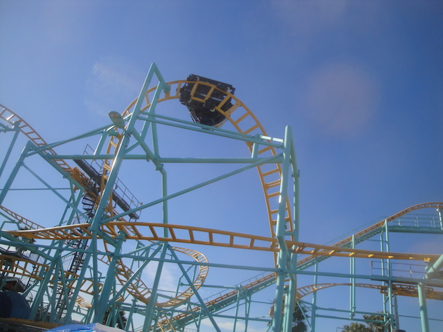
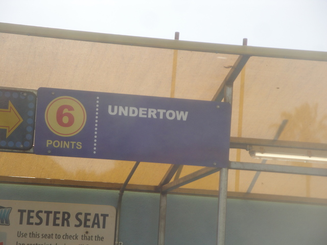

| |
Undertow Review

We're here at Santa Cruz Beach Boardwalk, where we'll be reviewing Undertow. The park's spinning coaster. All right. That's enough talking. Let's get riding. We get in the cars, pull down the lap bar, and off we go. We head around a turn and begin climbing the lifthill, getting a nice view of the Boardwalk as well as the streets of Santa Cruz. We head around a turn, through some straight track. We then head down a curved drop to the bottom. We don't get much spinning action here, but its a fun drop and delivers some speed. You then head up a curved hill, it doesn't cause us to spin much, but it's still enjoyable. And hey, now we have a view of the Pacific Ocean. We then head into some trims before dropping down and getting more action. We then head down another drop, through one of those vertical horseshoe elements, and then around another upward curve into more brakes. Hey, at least we get some spinning action in that. We then head around another drop, around another curve through some more S shaped track that should spin us or give us some laterals, but doesn't. Go through more brakes, down another small drop, through more curves and into a downward helix. Hey, more spinning action. We then head up a small hill, around more curves, and into the brake run. Maybe I just hit this on a bad day, but Undertow barely spun for me at all. I mean, it was still fun. But it really lacked as a spinning coaster. But hey. It varies from weight to weight. Hopefully you'll have much better luck on this ride.
6/10
Location: Santa Cruz Beach Boardwalk
Opened: 2013
Built by: Maurer Söhne
Last Ridden: April 26, 2015
I have ridden this exact same ride at the following parks.
Lagoon
Undertow Photos


Home
|